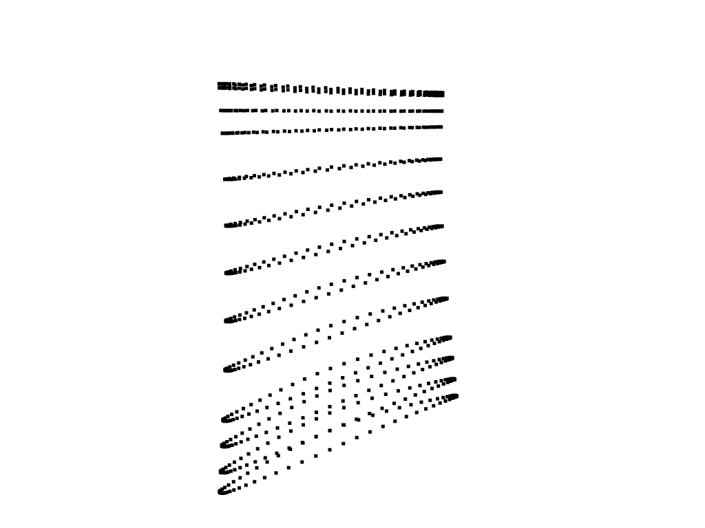
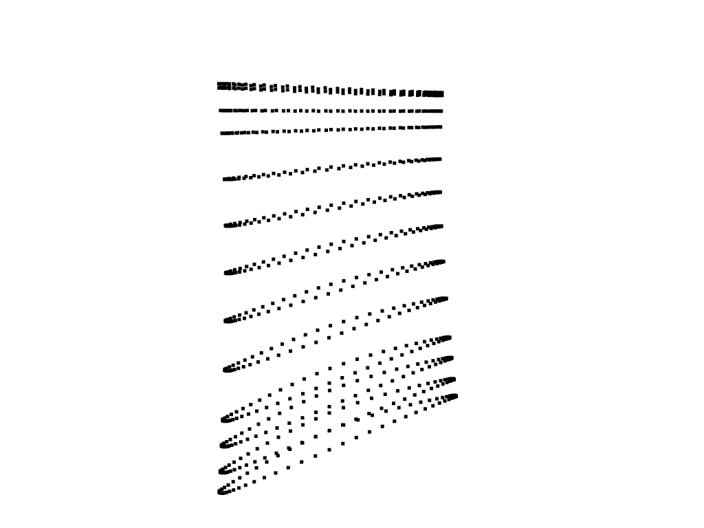

The Challenge of Geometry-Based Modeling
Creating finite element models for individual parts — or for series of parts in optimization studies or machine learning datasets — is traditionally a time-consuming and labor-intensive process.
The difficulty stems from the non-robust nature of CAD-based meshing. Even small changes in geometry can cause meshing algorithms to fail, requiring engineers to spend significant time repairing and remeshing models.
FEMORPH solves this problem with robust mesh morphing — eliminating the need for remeshing altogether. By adapting existing meshes directly to new geometries, FEMORPH enables fast, reliable, and automated model updates that power optimization loops, digital twins, and AI workflows.

 
